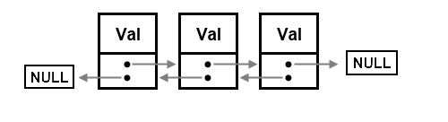
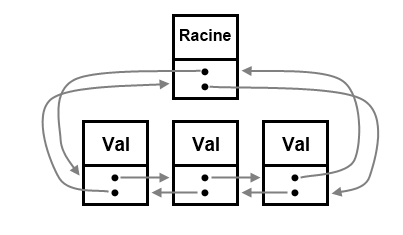
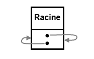
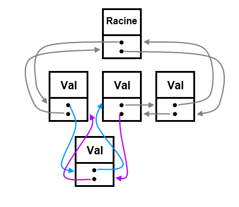
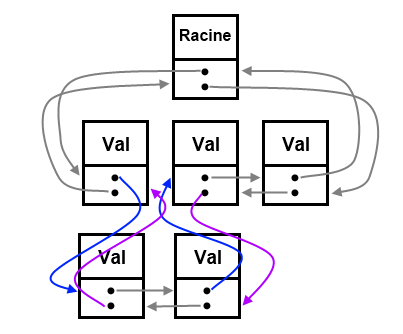

Vous vous intéressez au structures de données dynamiques en C ? Vous avez déjà entendu parler des listes doublement chainées, mais vous trouvez la mise en oeuvre trop compliquée ? Ou bien voulez-vous simplement en savoir davantage sur les types de listes existants ?
Je vous présente une autre manière d'implémenter les listes doublement chainées en C : avec des listes circulaires. C'est une manière qui mérite d'être mieux connue, car elle permet d'apporter une plus grande souplesse au code. Qui plus est, le concept de liste circulaire est bon à connaitre en soi, et pourra vous servir un jour...
Le principe d'une liste doublement chainée est de garder pour chaque élément de la liste un pointeur sur l'élément précédent et sur l'élément suivant.

Cela permet notamment de simplifier l'insertion ou la suppression d'un élément donné, ainsi que le parcours en sens inverse. Cependant, cela introduit aussi une certaine dose de complexité dans le codage, car la liste finit dans les deux sens par un pointeur sur NULL, ce qui nécessite d'ajouter dans le code la gestion de ces cas particuliers.
Imaginez maintenant que l'on ferme la boucle, en faisant pointer le pointeur 'precedent' du premier élément sur le dernier élément, et vice-versa.
Ben la liste devient corrompue, aucun moyen de la parcourir sans faire une boucle infinie !
Très juste, en effet. Alors quoi, je me suis moqué de vous ? Ce tuto se terminerait donc ici ? Bien sur que non ! :p
Nous allons créer un élément spécial, qui sera la racine de notre liste. Cet élément sera à la fois avant le premier élément et après le dernier. C'est lui qui va nous permettre de manipuler tranquillement la liste sans risquer quoi que ce soit.

Bon, je crois que le moment est venu de passer à du concret et vous montrer du code :) .
La définition de la liste se fait de la manière habituelle, avec une structure :
typedef struct _e
{
int val; /* données quelconques - ici un entier */
struct _e* prec; /* pointeur sur l'élément précédent */
struct _e* suiv; /* pointeur sur l'élément suivant */
} Liste_Circulaire_Doublement_Chainee;
Création

En revanche, une liste vide n'est plus représentée simplement par NULL.
En effet, pour pouvoir utiliser notre liste, nous devons au préalable la créer, c'est-à-dire créer sa racine. Pour cela, nous ferons :
Liste_Circulaire_Doublement_Chainee* creeListe (void)
{
Liste_Circulaire_Doublement_Chainee* racine = malloc ( sizeof *racine );
if ( racine != NULL ) /* si la racine a été correctement allouée */
{
/* pour l'instant, la liste est vide,
donc 'prec' et 'suiv' pointent vers la racine elle-même */
racine->prec = racine;
racine->suiv = racine;
}
return racine;
}
Parcourir la liste
Pour parcourir la liste, on se sert de sa racine. C'est pourquoi, on doit toujours garder un pointeur sur la racine de la liste.
On commence depuis le premier élément après la racine, et on s'arrête lorsque l'on arrive à la racine.
/* parcours à l'endroit */
Liste_Circulaire_Doublement_Chainee* it;
for ( it = liste->suiv; it != liste; it = it->suiv )
printf("%d, ", it->val);
/* parcours à l'envers */
Liste_Circulaire_Doublement_Chainee* rit;
for ( rit = liste->prec; rit != liste; rit = rit->prec )
printf("%d, ", rit->val);
Vider la liste
Pour vider la liste, c'est le même principe : on parcours la liste et on libère ses éléments.
void viderListe (Liste_Circulaire_Doublement_Chainee* liste)
{
Liste_Circulaire_Doublement_Chainee *it, *next;
for ( it = liste->suiv; it != liste; it = next )
{
next = it->suiv; /* on enregistre le pointeur sur l'élément suivant avant de supprimer l'élément courant */
free(it); /* on supprime l'élément courant */
}
}
Supprimer la liste
On vide d'abord la liste, puis on supprime la racine. Cette fois ci, il est bon de passer un pointeur sur la racine, pour pouvoir passer la racine à NULL;
void supprimerListe (Liste_Circulaire_Doublement_Chainee** liste)
{
viderListe( *liste ); /* on vide d'abord la liste */
free( *liste ), *liste = NULL;
}
Un petit aperçu en image d'une insertion dans une liste circulaire doublement chainée :

Dés à présent, vous allez comprendre tout l'intérêt de cette methode :) .
Ajouter avant / après un élément
On commence par ces opérations, car elles vont nous servir pour implémenter l'ajout en tête et en queue.
void ajouterAvant (Liste_Circulaire_Doublement_Chainee* element, int val)
{
Liste_Circulaire_Doublement_Chainee* nouvel_element = malloc ( sizeof *nouvel_element );
if ( nouvel_element != NULL )
{
nouvel_element->val = val;
/* on définit les pointeurs du nouvel élément */
nouvel_element->prec = element->prec;
nouvel_element->suiv = element;
/* on modifie les éléments de la liste */
element->prec->suiv = nouvel_element;
element->prec = nouvel_element;
}
}
void ajouterApres (Liste_Circulaire_Doublement_Chainee* element, int val)
{
Liste_Circulaire_Doublement_Chainee* nouvel_element = malloc ( sizeof *nouvel_element );
if ( nouvel_element != NULL )
{
nouvel_element->val = val;
/* on définit les pointeurs du nouvel élément */
nouvel_element->prec = element;
nouvel_element->suiv = element->suiv;
/* on modifie les éléments de la liste */
element->suiv->prec = nouvel_element;
element->suiv = nouvel_element;
}
}
Comme vous pouvez le constater, le code est ici très concis. On ne s'amuse pas à faire tout une batterie de tests.
Ajout en tête / queue
A présent, pour ajouter un élément en début ou en fin de liste, rien de plus simple : nous allons nous servir de la racine. L'élément qui précède la racine est le dernier élément de la liste, et l'élément suivant la racine est le premier.
Ici, on accède aux éléments sans les enlever de la liste :
Liste_Circulaire_Doublement_Chainee* premierElement (Liste_Circulaire_Doublement_Chainee* racine)
{
if (racine->suiv != racine) /* on vérifie que l'élément existe bien */
return racine->suiv;
else /* sinon on retourne NULL */
return NULL;
}
Liste_Circulaire_Doublement_Chainee* dernierElement (Liste_Circulaire_Doublement_Chainee* racine)
{
if (racine->prec != racine) /* on vérifie que l'élément existe bien */
return racine->prec;
else /* sinon on retourne NULL */
return NULL;
}
Il existe d'autres opérations courantes sur les listes.
Insertion d'une liste d'éléments
Pour l'insertion d'une autre liste ou sous-liste dans la liste, le principe est plus ou moins le même que l'insertion d'un élément. Il suffit de fournir l'élément avant (ou après) lequel placer la sous-liste, ainsi que le premier et le dernier élément de ladite sous-liste. Visuellement, l'opération ressemble à ceci :

Je vous laisse coder cela. :)
Tri
Le tri n'est pas une opération sur liste à proprement parler. Néanmoins, il est moins simple de trier une liste qu'un tableau en C, car impossible d'utiliser qsort().
A vous de choisir un algorithme efficace (le tri fusion est assez adapté aux listes) et de l'écrire si vous avez besoin d'une telle fonction.
Nombre d'éléments
On peut remarquer l'absence de possibilité de connaitre efficacement la taille de la liste. Selon l'implémentation proposée dans ce tuto, la fonction nombreElements() devra être codée comme suit :
size_t nombreElements (Liste_Circulaire_Doublement_Chainee* liste)
{
size_t n = 0;
Liste_Circulaire_Doublement_Chainee* it;
for ( it = liste->suiv; it != liste; it = it->suiv )
n++;
return n;
}
Ce code n'est pas performant, car pour connaitre le nombre d'éléments présents dans la liste, on doit la parcourir tous ses éléments. Cette limitation peut devenir gênante selon les cas d'utilisation.
Pour stocker proprement la taille de la liste, il vaut mieux encapsuler cette dernière comme ceci :
Encapsulation
typedef struct _e
{
int val; /* données */
struct _e* prec; /* pointeur sur l'élément précédent */
struct _e* suiv; /* pointeur sur l'élément suivant */
} _elem;
typedef struct
{
_elem *racine; /* pointeur sur la racine de la liste */
size_t nb_elements; /* nombre d'éléments dans la liste */
} Liste_Circulaire_Doublement_Chainee;
La structure Liste_Circulaire_Doublement_Chainee contient à présent l'élément racine et le nombre d'éléments présents dans la liste. Il nous faudra donc modifier le prototype des fonctions en conséquence.
La fonction creeListe devra initialiser le nombre d'éléments a zéro, et les fonction de modification (ajout/suppression d'éléments) devront respectivement incrémenter ou décrémenter le nombre d'éléments de la liste. Dés lors, toutes les fonctions permettant de modifier la liste doivent recevoir un pointeur sur la structure Liste_Circulaire_Doublement_Chainee...
L'ennui majeur avec ce type de methode, c'est que l'insertion d'un segment de liste dans une autre liste perd en performances : on doit parcourir pour connaitre le nombre d'éléments ajoutés.
Retour des fonctions
Une fonction modifiant un objet est dite "destructive". Les fonctions de modification de liste proposées ci-dessus sont toutes destructives, en accord avec la philosophie du langage C. C'est pourquoi le type de retour est void.
Il est tout à fait possible d'écrire des versions non-destructives de ces fonctions, c.a.d que la fonction renvoie une copie modifiée de la liste sans altérer la liste originale. Dans ce cas, les fonctions renverront une liste.
Optimisation
La réutilisation des fonctions existantes est une bonne idée d'un point de vue lisibilité, mais pas d'un point de vue des performances. Si le code est appelé a être le plus performant possible, il vaut mieux ne pas imbriquer les fonctions.
Utilité
Enfin, l'un des avantages de ce type de liste, mis à part la simplicité d'implémentation, est de pouvoir momentanément supprimer un élément de la liste sans l'effacer, pour le restaurer ensuite à la même place (le cacher en quelque sorte). Cette opération, qui exige que la liste ne soit pas modifiée entre temps, se justifie dans certains algorithme que je n'aborderai pas ici, mais sachez qu'elle existe :
Si vous avez fait du C++, vous vous êtes peut-être aperçus d'une certaine similitude entre le code proposé ici et le conteneur <list> de la STL.
C'est normal :) : je m'en suis quelque peu inspiré, pour la bonne raison que la classe <list> proposée par la STL implémente elle aussi les listes doublement chainées. D'autre part, le fait d'utiliser un noeud racine pour manipuler la liste m'a intuitivement orienté vers une approche plus "objet".
En conclusion, retenez tout de même que listes circulaires et listes doublement chainées sont deux notions indépendantes : on peut utiliser des listes circulaires simplement chainées, tout comme des listes doublement chainées qui ne seraient pas circulaires. Mais je trouve que ces deux notions se marient fort bien ensemble.